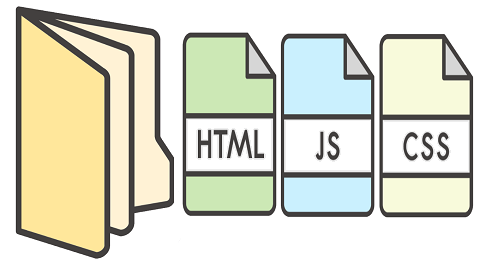
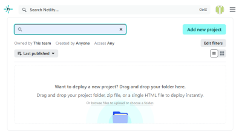
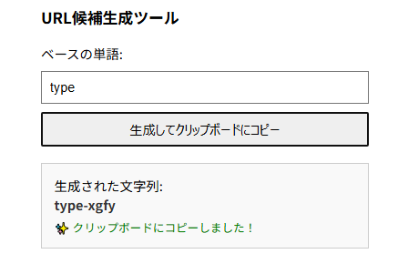
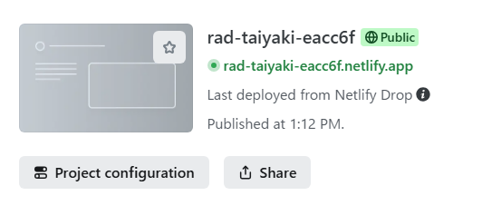
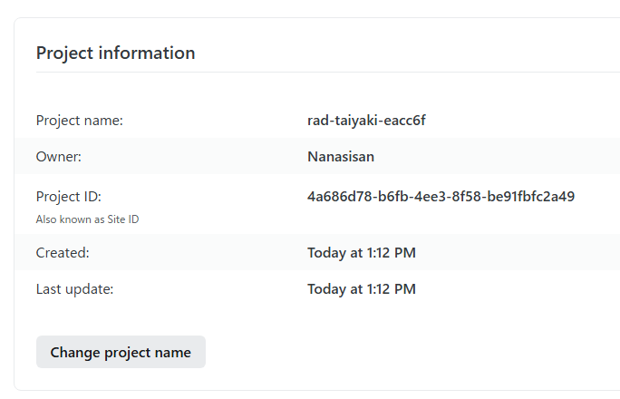
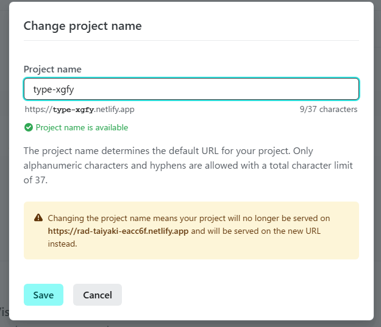
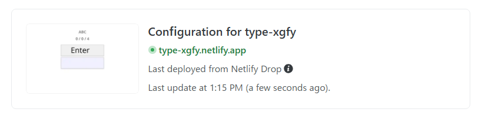

netlifyにSign upしてLog in
フォルダをドロップ

URLの変更
自動的にきめられたURLがつけられている。
ここをくりつくしてURL候補生成ツールを開く

Project configurationをクリック

Change project nameをクリック

Project nameに貼り付け
Project name is availableならSaveをクリック

URLが変更された

タイピングABC
pwa化に続く